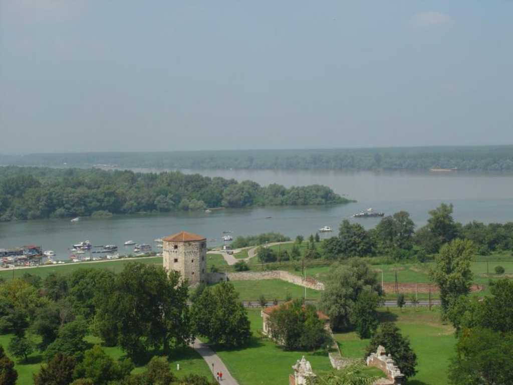
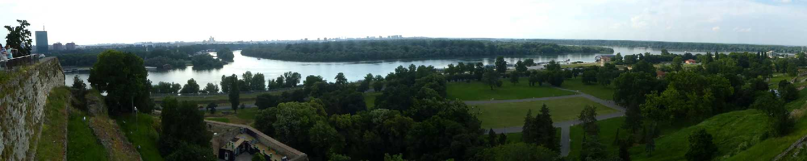
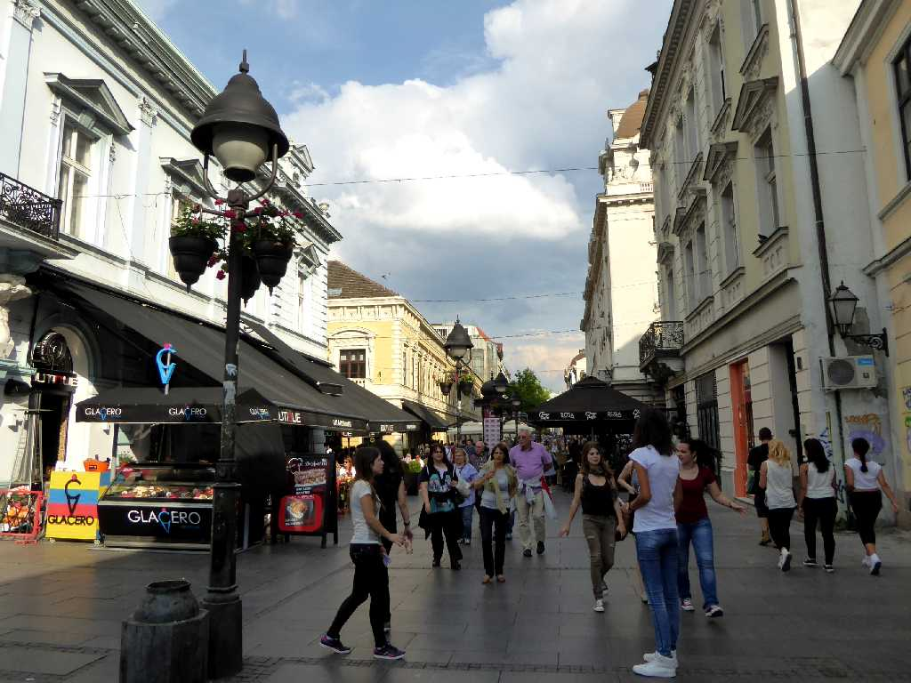
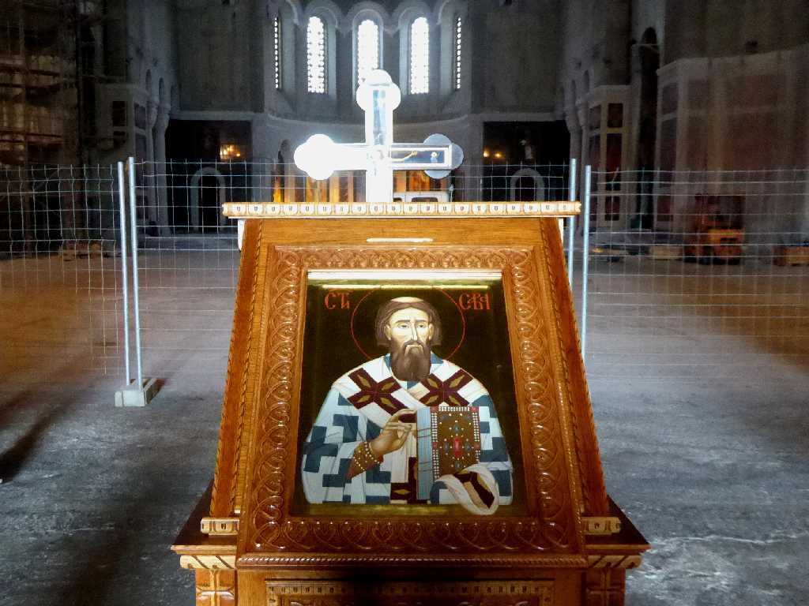
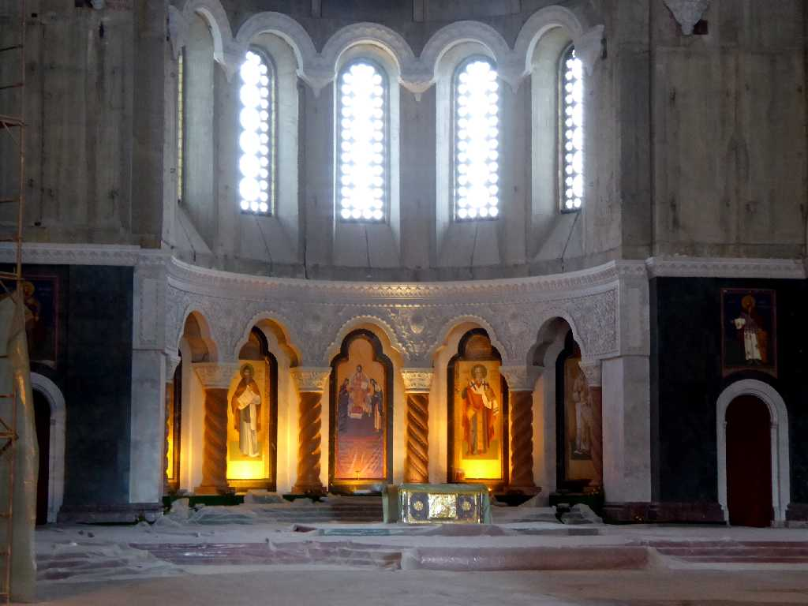
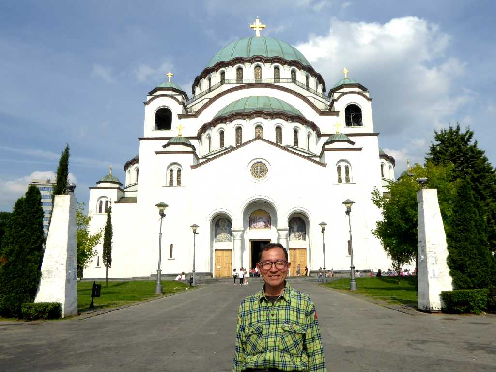

August 1989 Beograd from Kalemegdan park
ドナウ川と手前のサヴァ川の合流する街で私が訪ねた１９８９年８月はまだ内戦前であった

Donav Beograd
約３０年ぶりの再訪問で共産圏から民主化して当時より明るい雰囲気を感じた
Kalemegdan Beograd
カレメグダンは川の合流地点の高さ１２５mの崖の上にあるベオグラード要塞跡で公園になっている

Ulica Kneza Mihaila
ベオグラードの繁華街クネズミハイロヴァ通りは歩行者天国となっている

Hram Svetog Save Beograd
中世セルビア正教の創建者聖サワを祀る大聖堂で世界最大級の正教会である

Icon Hram Svetog Save
セルビア正教の創建者聖サワの不朽体がオスマン帝国によって１５９５年に焼かれた場所である

Altar Hram Svetog Save
１９３５年に建造が再開されたものの内戦などの中断もあり未だ再建中である

June 10 2016 Hram Svetog Save
ベオグラードからドブロブニクまでバルカン諸国７,０００ｋｍバスの旅が始まる